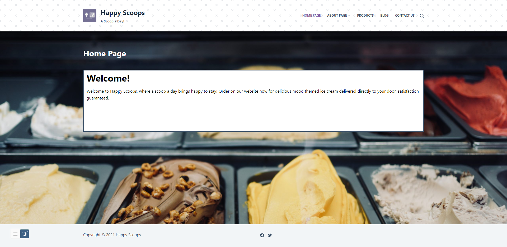

This is a website that I created using the software "Wordpress" for an ice cream company I made up named
"Happy Scoops".
This is a W.I.P (Work in Progress) website I created using the website "Shopify" for a "local clothing shop"
that I made up.

This is a fake political site I made using the software "Drupal" for me running for PM.